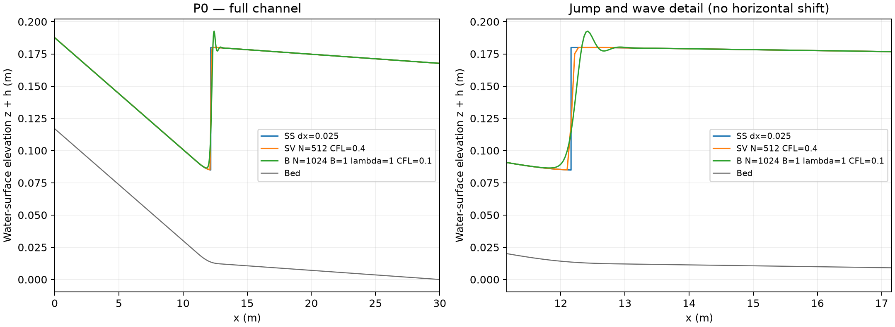
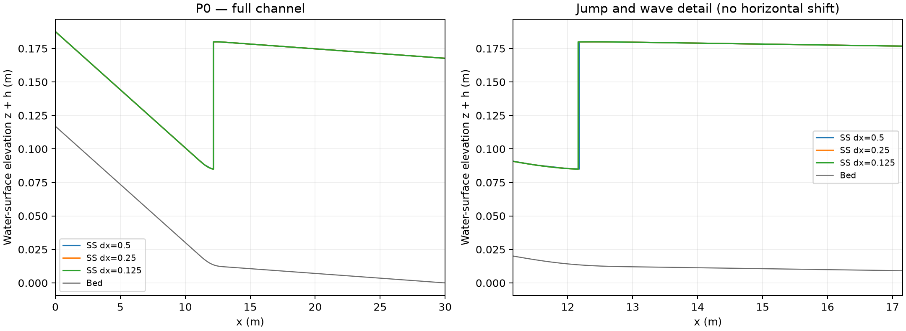

WINDOWS / WSL 2 · 2026-10-22
兩組 P0 的 Windows／WSL 實測通過
學生可沿用已完成 GC1991 的 WSL／Ubuntu 與系統工具，在另一個資料夾安裝坡度套件。兩組 Python 流程已在真正 Windows／WSL 執行；HEC-RAS 6.6 求解另列待驗收。
實際測試了什麼？
在 Windows Server 的 WSL 2／Ubuntu 24.04，以同一名一般使用者先安裝並完成 GC1991，再於相鄰的 slope-lab 資料夾安裝新版。兩套教材各有自己的 .venv、編譯工具與核心。這驗證「沿用系統環境、分開安裝教材」的操作方式。
| 項目 | 結果與範圍 |
|---|---|
| GC1991 原基準 | 先完成三方法，再安裝坡度套件；結束後三方法重跑成功 |
| 坡度套件安裝 | Linux 原生編譯、共用程式庫與專用核心載入通過 |
| 第一組 P0 | SS／SV／B、圖與凍結參考逐點核對通過；8 個程式格執行成功 |
| 第二組 P0 的 Python 部分 | 三種斷面 SS、繪圖與 HEC 專案產生通過；6 個程式格執行成功 |
| Windows 連線 | 兩組啟動器的核心、Notebook API 與 Jupyter 頁面均由 Windows 取得 HTTP 200 |
| HEC 輸入檔往返 | 25 個檔案經 Windows 複製回 WSL，指紋一致；原輸入保留 |
| GC1991 保存 | 原程式、既有結果、套件清單與核心檔案未變；原啟動器仍可連線 |
| HEC-RAS 6.6 求解 | 尚未執行 Compute；未產生或冒用 HEC 水面 |
| 人工 Windows 操作 | 尚未檢查學生電腦的 Explorer 點選與瀏覽器互動；自動連線已測 |
首輪在最後的GC1991輸出計數發生驗收腳本錯誤：比較圖資料夾被算為第四個求解結果。修正為依metadata.json識別三個求解結果後，完整重新安裝與執行通過。教學ZIP、數值程式及門檻皆未更動；失敗首輪紀錄與修正後紀錄均保留。
P0 水深重現：門檻保持原訂值
P0 是長30 m、寬0.46 m、由陡坡平滑轉為緩坡的矩形渠道。SS是Standard-step method（標準步法），SV是Saint-Venant（聖維南淺水方程），B是本教學的定常壓力近似Boussinesq型模型。完整流量、邊界及方程見問題設定與方法講義。
下表是本次 Windows／WSL 實際計算與凍結參考逐點相減；未平移曲線或修改物理設定。
| 方法 | 解析度 | 最大水深差（m） | 容許值（m） | 結果 |
|---|---|---|---|---|
| SS | Δx=0.025 m | 0 | 1e-08 | 通過 |
| SV | N=512 | 1.00001e-12 | 0.0002 | 通過 |
| B | N=1024 | 9.33154e-10 | 1e-05 | 通過 |
相容性通過不表示 B 波形已網格收斂，也不改變原有 SV 嚴格定常篩檢的限制；這些研究問題仍保留。
第一組：本次實算三模式水面線

下載位置、水深與波動指標 · Notebook 自身的逐點核對
第二組：本次實算三種斷面標準步法
| 斷面間距（m） | 斷面數 | SS 跳接位置（m） | 跳前水深（m） | 跳後水深（m） |
|---|---|---|---|---|
| 0.5 | 61 | 12.180342 | 0.07146939 | 0.16622773 |
| 0.25 | 121 | 12.165267 | 0.07140457 | 0.16634320 |
| 0.125 | 241 | 12.161187 | 0.07138748 | 0.16637366 |

下載 SS 結果表 · HEC 文字精度配對基準。三份 HEC 原生輸入已實際經 Windows 複製往返；HEC 求解及真實匯出仍須另做。
學生可以怎麼開始？
- 保留 ~/gc1991-lab；在 Linux 家目錄另建 ~/slope-lab，不複製舊 .venv。
- 依安裝頁執行一次 setup，確認 Slope Channel Lab 核心。
- 兩組都由原 Ubuntu 啟動各自 P0，使用 Windows 瀏覽器連線。
- 第二組把完整 HEC 專案複製到 Windows，完成 HEC-RAS 6.6 計算後才回傳真實匯出。
完整接續安裝與檔案交換 · 兩組逐格示範 · 下載本次實測的 v1.3 教學包
實測環境與可重現證據
| 項目 | 版本／資訊 | 說明 |
|---|---|---|
| Windows | Windows Server 2025 Datacenter | 26100 |
| WSL Linux | Linux-6.18.40.1-microsoft-standard-WSL2-x86_64-with-glibc2.39 | x86_64 |
| Python | 3.12.3 (main, Aug 31 2026, 10:18:26) [GCC 13.3.0] | 套件專用 .venv |
| Linux 使用者 | hjslope | 一般帳號，非 root |
| numpy | 2.5.4 | 本次實際安裝版本 |
| scipy | 1.18.1 | 本次實際安裝版本 |
| matplotlib | 3.11.2 | 本次實際安裝版本 |
| jupyterlab | 4.6.4 | 本次實際安裝版本 |
| nbclient | 0.11.0 | 本次實際安裝版本 |
| ipykernel | 7.4.0 | 本次實際安裝版本 |
GitHub Actions 完整執行紀錄 · 驗收摘要 · 完整自動檢查結果 · 兩套 ZIP 指紋 · Python 套件清單 · WSL 2 發行版紀錄
本附錄補充凍結 v1.3 發行時的 macOS 紀錄。驗收原始紀錄保留當時測試分支與發布限制；教師於 2026-10-22 其後核准正式發布。ZIP 內「WSL 待驗收」是封存時點的狀態；本頁提供同一個 ZIP 其後的 Windows／WSL 實測證據。原 ZIP 與 GC1991 保持完整可追溯。